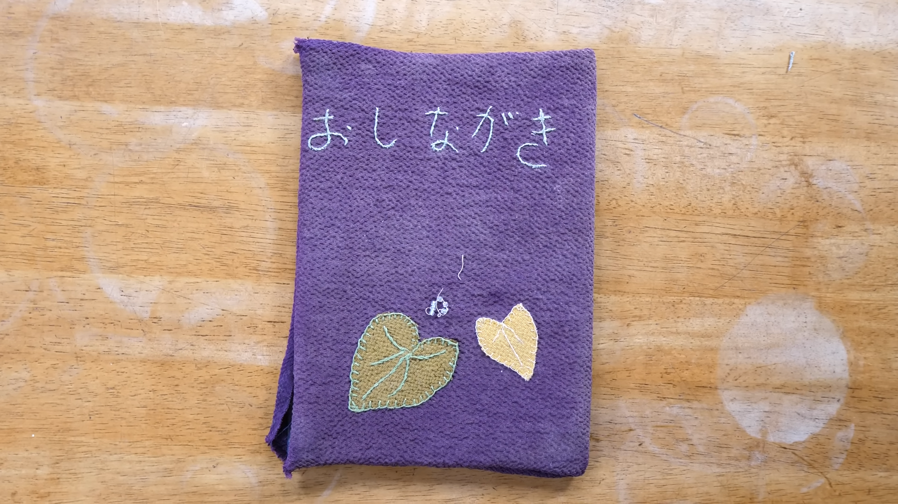
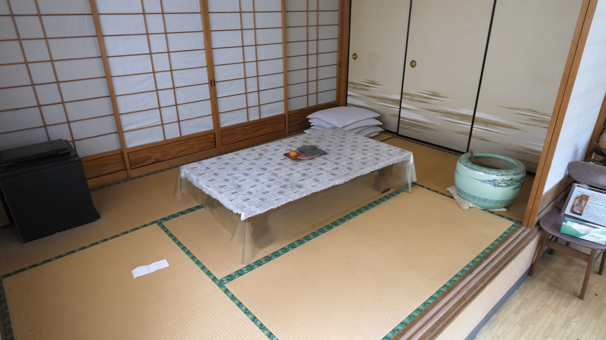
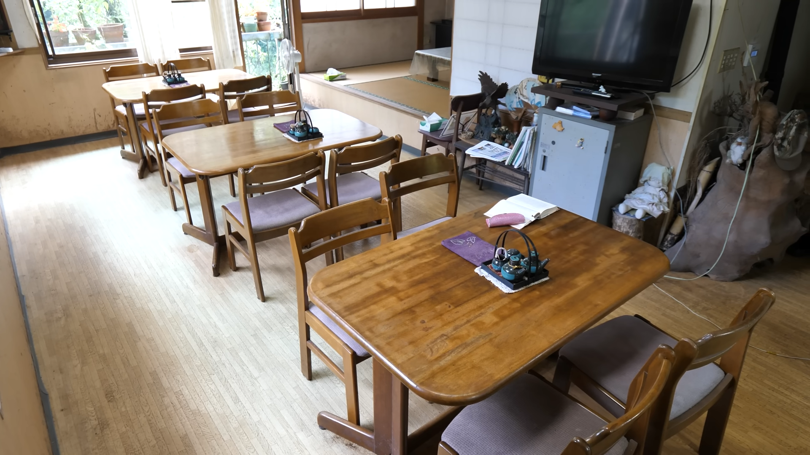
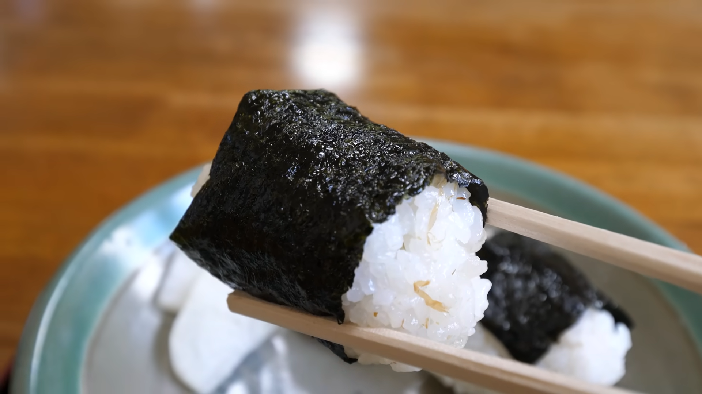
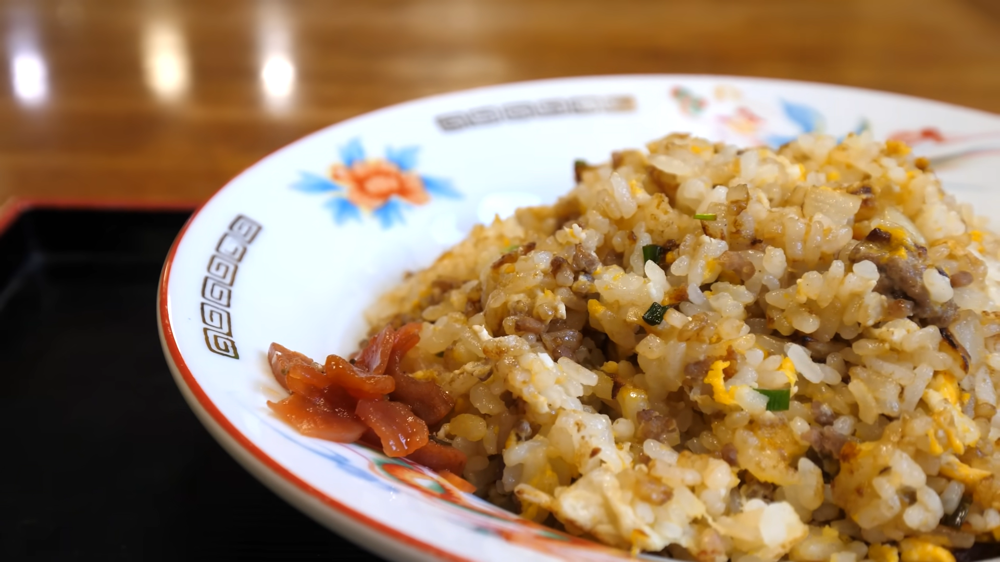
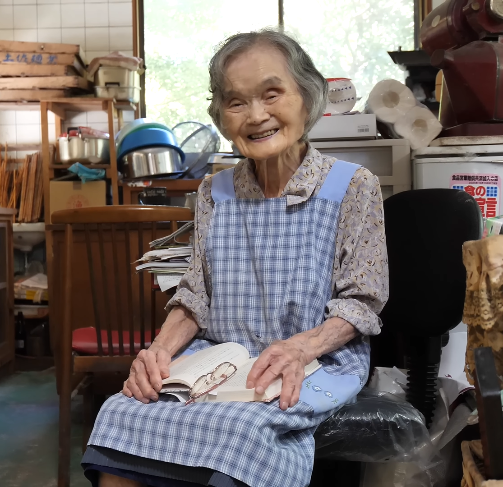

6 tatami-floored seats are available

There are 12 seats at the table

Rice Balls

Old styled fried rice

Green tea
A Japanese restaurant in the mountains
The Soba Chaya(そば茶屋), established in 1968 is a handmade soba noodle restaurant owned by a 97-year old woman in Tokushima prefecture, Japan. The restaurant offers traditional japanese food like riceballs, old style fried rice, seasonal ayu sushi and green tea. The owner gets up at 6am, finish the housework, and start making soba around 8 am every morning. She started this shop when she was 40. She doesn't really have any days off. The shop is open 365 days a year.

"I've been doing this for over 50 years. There are people who say "It was delicious". That's nice to hear. I talk about how I enjoy every day. I wonder what kind of customers would come today. Talking to people means that you can learn lots of things you didn't know before. I'm glad I opened the shop after all. I think that's what gives me a sense of purpose in life."


6 tatami-floored seats are available

There are 12 seats at the table

Rice Balls

Old styled fried rice
Green tea